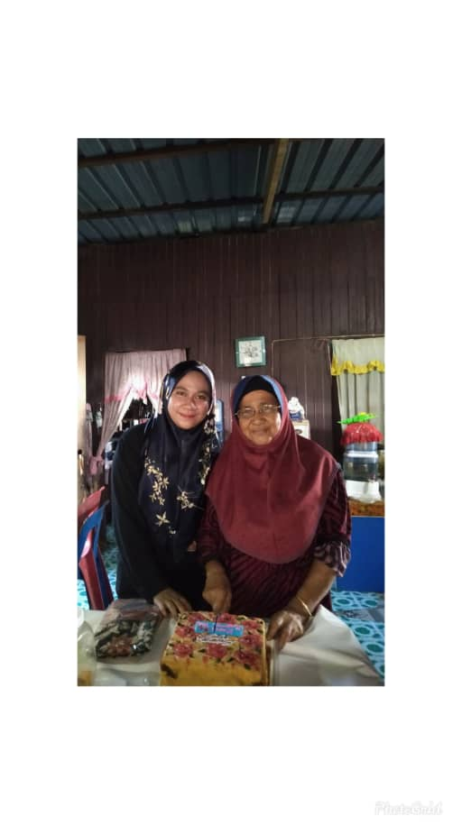
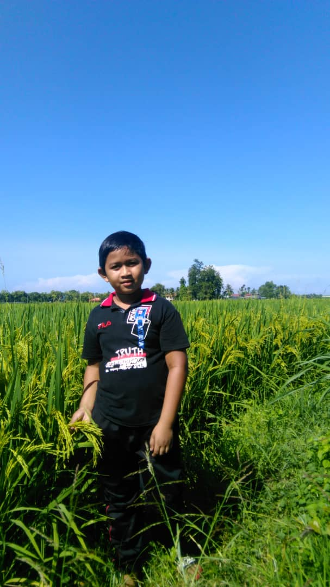
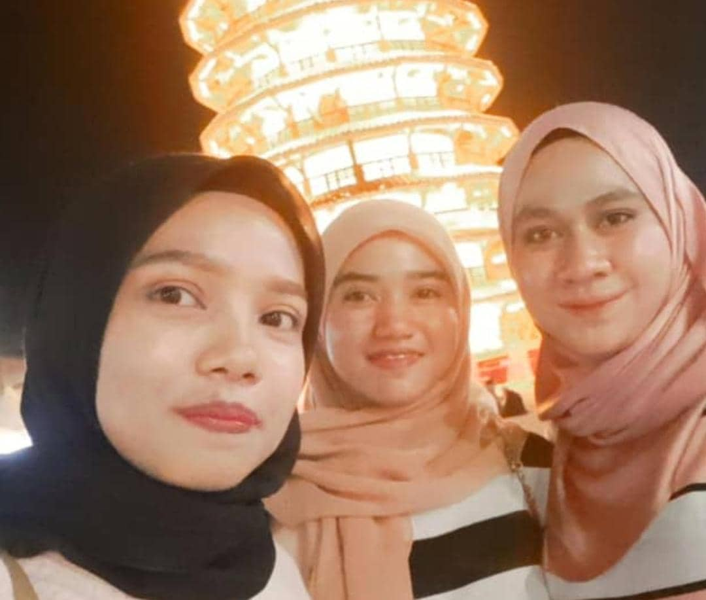
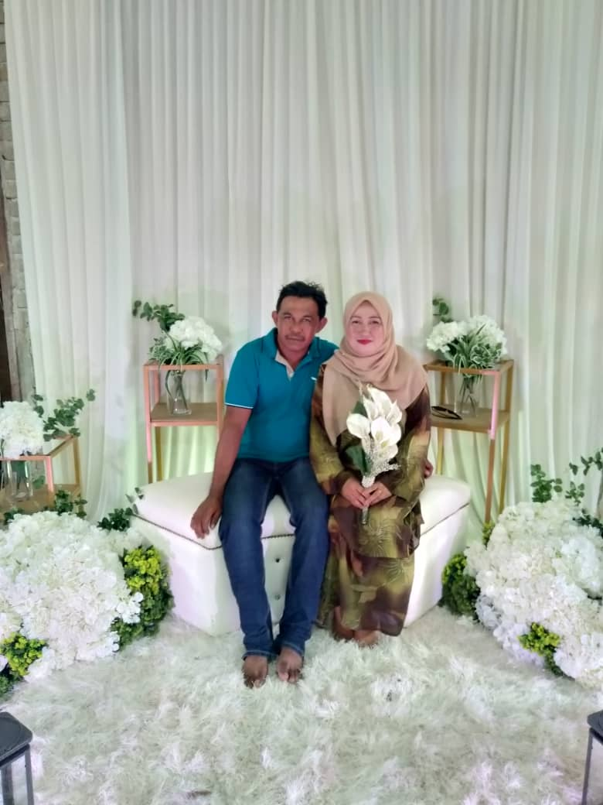

MY FAMILY

I love my grandmother substantially. Ever since I used to be born, she has taken care of me. She has taken great responsibility in bringing me up in a very healthy and disciplined way. My grandmother could be a very bold lady. We will learn lots of things from her. She could be a polite one who can handle any quiet situation in a very proactive way.

My brother is one of the best gifts I have received. His name is Hakimi.He is the last child and this gives him an opportunity to be annoying if you know what I mean. He is joyful and always ready to heed correction.
A family is one of the greatest gift god has given to all living creatures on the earth including humans. It is a privilege to have a happy family as not everyone in the world has it.
The joy of living with your parents, fighting with your siblings over petty can just make you smile the moment you think of it
Family is important to every one of us and we all love our family. Wherever we go in this world and whatever we may achieve, our heart and soul will always be in our home because it is where our beautiful family is. Nothing in this world can be stronger than the bonding of the blood. The members of the same family may have differences of opinions, may quarrel often for silly things but in spite of all these it is our family that supports us during our ups and downs.I have a family that consists of 6 people which are my father, my mother and four children which includes me

My sisters are the best. They name is Siti Fatimah and Maslyni Although we can be frustrating sometimes but that is mostly because of my stubbornness. They pretend they do not really care but deep inside they do.I felt so happy that day because I had someone who had my back.
MY FAMILY

My father is the best father in the world. His name is Zainizam.Well, that’s what I say. He is a farmer. I look up to my father a lot because I will like to take a lot of his behaviours and make it mine. He taught me to be contented with whatever I have.
My mum is the best cook in the world.Her name is Sabita I do not know where I would be today without my mum. I owe her a lot. I want to be like my mum. I remember those times when she had to sacrifice when the most precious of her things just to make me happy. She is loving, caring, understanding, accommodating. In fact, she is everything you can ever wish for in a mother.